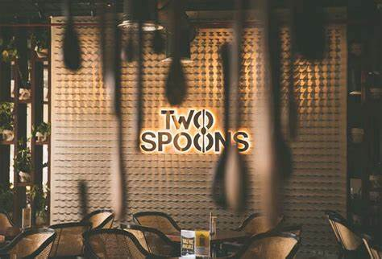
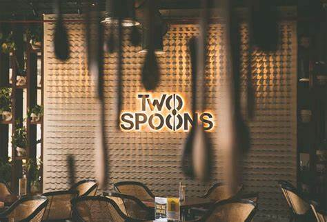
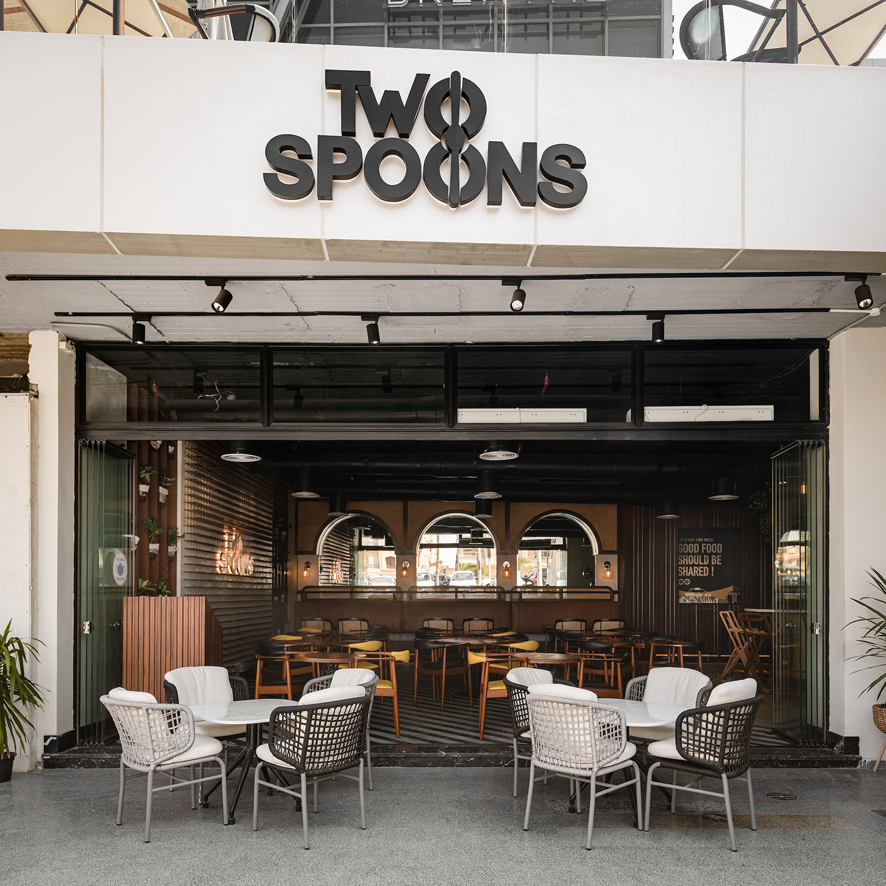
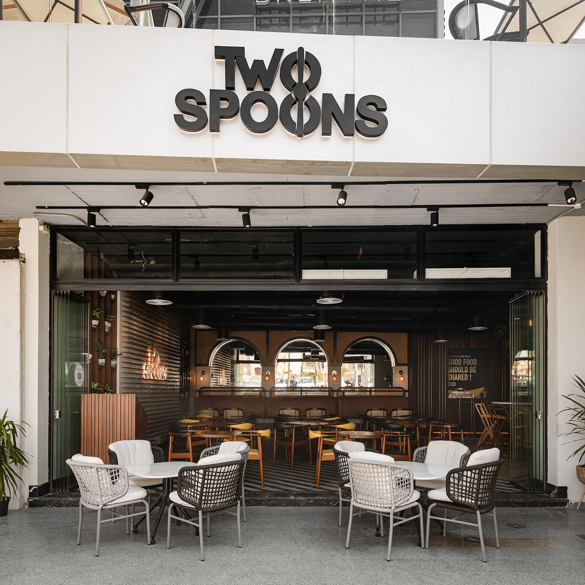

TwoSpoons was founded in 2023 by two lifelong friends who shared a passion for cooking and bringing people together through food. With a focus on fresh, locally sourced ingredients and bold flavors, we craft dishes that blend tradition with creativity. Whether you're here for a cozy dinner, a special celebration, or just a great meal, our warm hospitality and vibrant flavors make every visit a memorable experience. At TwoSpoons, food is more than just a meal—it’s a moment to savor and share.
Chef Ibrahim discovered his passion for cooking while working in his family’s small café. He later trained at a well-respected culinary institute in his hometown and gained hands-on experience in local restaurants. With over eight years in the industry, he specializes in hearty, flavorful dishes that bring comfort and satisfaction. At TwoSpoons, Chef Ibrahim focuses on crafting meals that feel like home while incorporating fresh, locally sourced ingredients.
Starting as a line cook in a neighborhood eatery, Chef Yusuf worked his way up through dedication and a love for cooking. He completed a culinary training program and spent several years refining his skills in casual dining establishments. With a knack for balancing flavors and creating delicious, crowd-pleasing meals, Chef Yusuf ensures every dish at TwoSpoons is made with care and creativity, offering guests a warm and welcoming dining experience.
At TwoSpoons, we take pride in ensuring that all our food is 100% Halal-certified, giving our customers complete confidence in the meals we serve. We strictly adhere to Halal guidelines, sourcing only Halal-certified meats and ingredients, free from any pork, alcohol, or non-Halal additives. Our kitchen follows strict food preparation standards to prevent any cross-contamination, and we proudly display our official Halal certification as a testament to our commitment. Whether you're dining with us for a casual meal or a special occasion, you can enjoy every bite knowing that integrity, quality, and adherence to Halal principles are at the heart of everything we create.
 

 

Over the years, TwoSpoons has been honored to receive local recognition for our dedication to quality and hospitality. We take pride in serving fresh, halal-certified dishes with exceptional flavors that bring people together. Here are some of the awards and distinctions we've earned:
🏆 Best Casual Dining – City Food Awards 2024
🏆 Top 10 Must-Try Restaurants - Local Eats Magazine
🏆 Excellence in Customer Service – Neighborhood Choice Awards